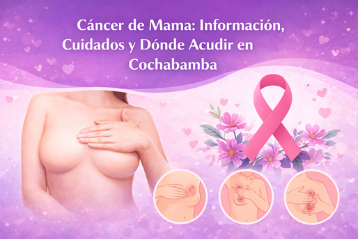

Cáncer de Mama: Información, Cuidados y Dónde Acudir en Cochabamba

Información General y Síntomas
El cáncer de mama es el crecimiento anormal de células en el tejido mamario. Es fundamental conocer nuestro cuerpo para detectar cambios a tiempo.
Señales de Alarma
Bultos o Nódulos: La aparición de una "bolita" (nódulo) en la mama o la axila, incluso si es indolora, es la señal más común.
Cambios en la Piel: Observar hundimientos, arrugas, enrojecimiento, descamación o una textura inusual similar a la "piel de naranja".
Alteraciones del Pezón: Cambios en su forma, hundimiento (pezón invertido) o secreción espontánea (que no sea leche materna).
Dolor Persistente: Un dolor en una zona específica de la mama o axila que no desaparece.
Cuidados y Prevención
Adoptar hábitos saludables reduce el riesgo, pero la vigilancia constante es indispensable.
Pilares de la Prevención
Autoexploración Mamaria Mensual: Realízala tú misma a partir de los 20 años para familiarizarte con la textura normal de tus mamas.
Examen Clínico Anual: Acude a un profesional de salud para un examen clínico de mamas a partir de los 25 años.
Mamografía Regular: Es la herramienta principal de detección precoz. Se recomienda anualmente o cada dos años para mujeres de 40 a 69 años.
Estilo de Vida Saludable: Mantén un peso adecuado, realiza actividad física regularmente y limita el consumo de alcohol.
Dónde Acudir en Cochabamba, Bolivia
El Sistema Único de Salud (SUS) en Bolivia garantiza la atención integral gratuita para el cáncer de mama, cubriendo desde la detección hasta el tratamiento.
Hospitales y Centros de Tratamiento (Sector Público)
Estos centros ofrecen servicios de diagnóstico, tratamiento y quimioterapia gratuita:
Hospital Materno Infantil Germán Urquidi: Cuenta con un centro de quimioterapia ambulatoria con sillones especializados y equipos de infusión.
Hospital Clínico Viedma: Su servicio de oncología clínica se ha ampliado para triplicar la atención a pacientes, incluyendo camas y sillones para quimioterapia.
Hospital de Villa Tunari: Dispone de un equipo de mamografía para la detección temprana.
Instituto Oncológico Nacional (ION): Centro especializado en la prevención, diagnóstico y tratamiento del cáncer en Cochabamba.
Centros Privados y Clínicas de Diagnóstico
Clínica CIES Cochabamba: Ofrecen paquetes de detección (consulta, ecografía, mamografía) a precios accesibles y campañas de salud.
Dirección: Calle Junín #687, casi esq. Teniente Arévalo.
Dirección: Centro Médico CIES, Calle Uruguay #436, entre 25 de Mayo y San Martín.
Centro de Diagnóstico Darras: Ofrecen servicios de mamografía.
GlobalMed Cancer Center: Centro oncológico privado.
Clínica Los Olivos: Cuenta con especialidad en oncología.
Grupos de Apoyo y Asociaciones
Asociación de Pacientes con Cáncer y Familiares Bolivia: Grupo de apoyo e información para pacientes y familias.
"Gotita Roja" Bolivia: Organización que también puede ofrecer información y apoyo.
Contactos Útiles
Ministerio de Salud y Deportes de Bolivia: Publica información sobre cómo acceder a tratamientos gratuitos.